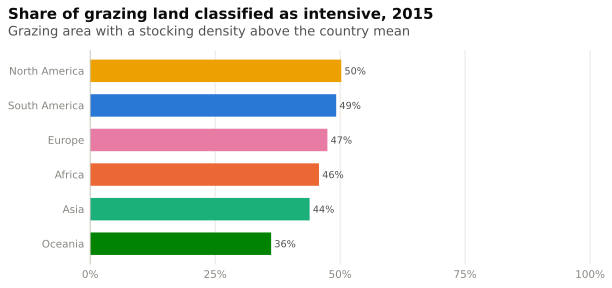
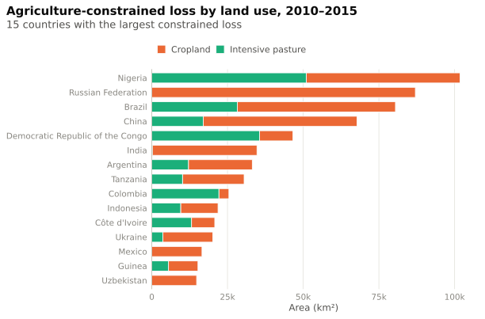

Cropland & pasture
Agricultural land in LandSHIFT and its role for natural ecosystem loss
Agricultural land in BF-NEE consists of cropland (irrigated + rainfed) and intensive pasture. A cell’s grazing land counts as intensive if its stocking density is above the country mean of the grazing land (fixed per country, 1995–2015). Extensive grazing stays part of the natural ecosystem cover (method).
Agricultural land over time
Expansion of cropland and pasture
Net agricultural expansion per grid cell, split into cropland and pasture (the quantity that limits the attributed loss).
How intensive is grazing?

Where is pasture expansion linked to ecosystem loss?
